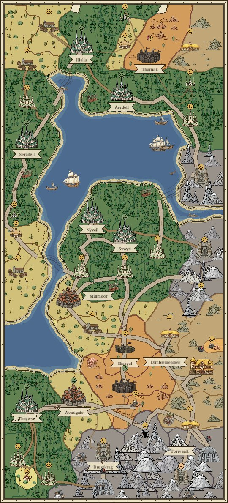
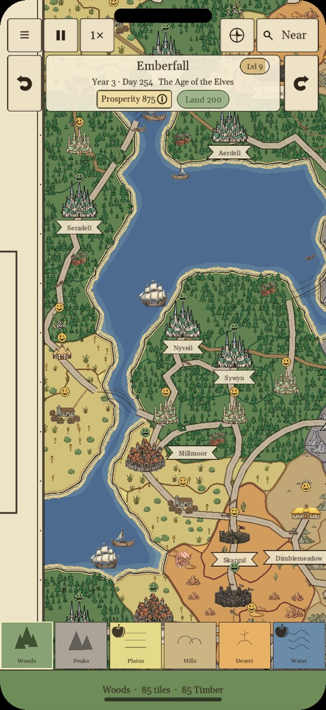
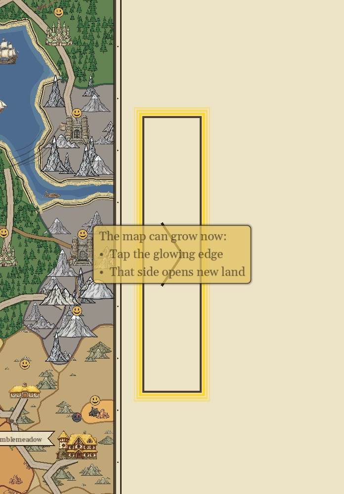
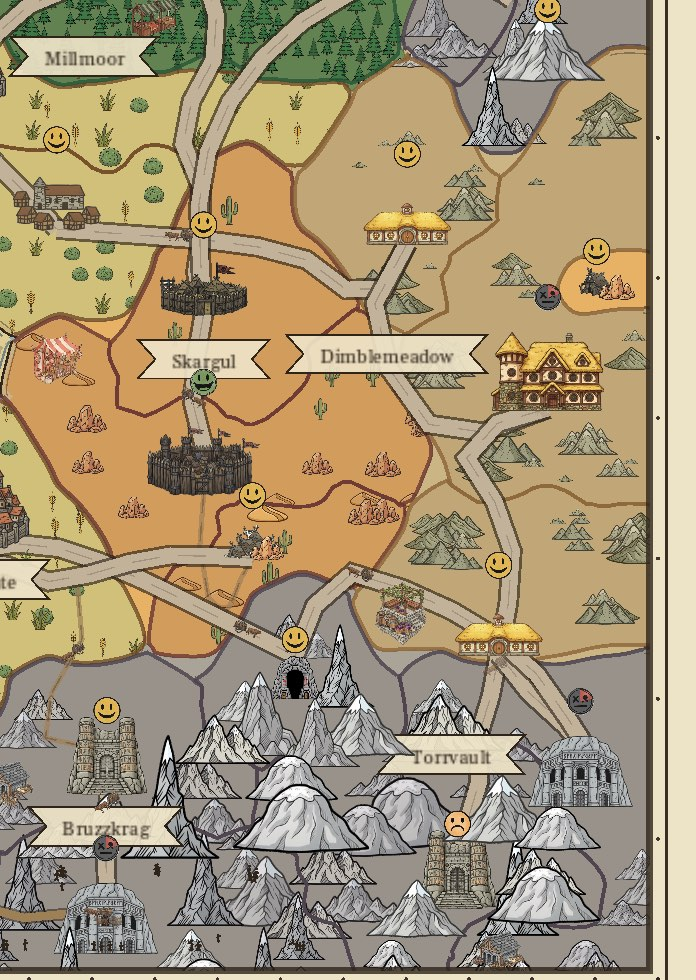
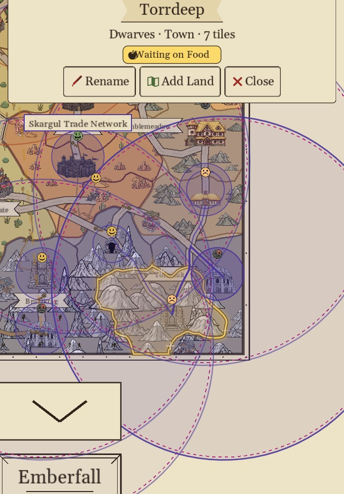
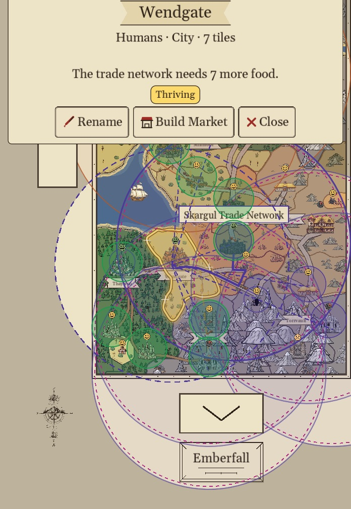
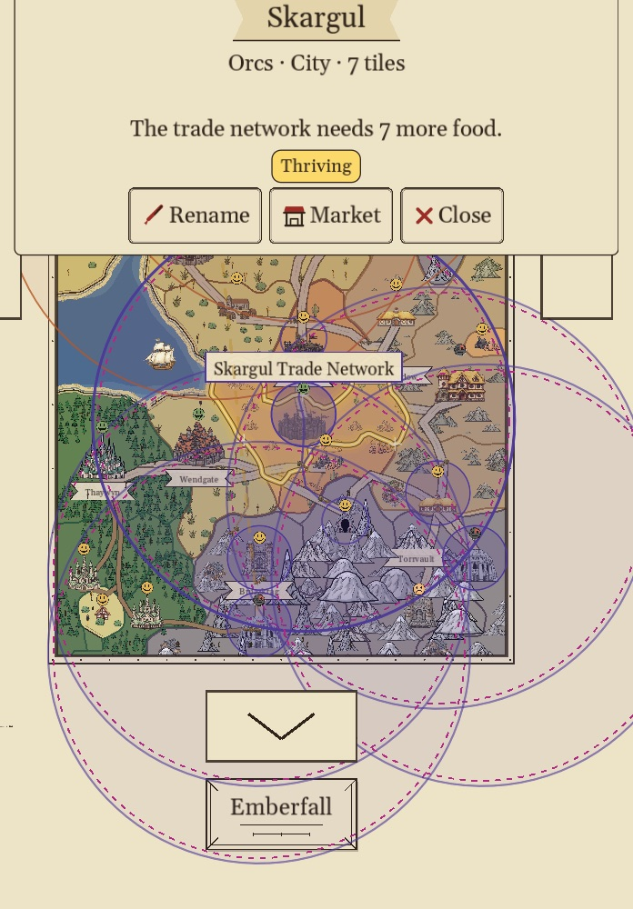
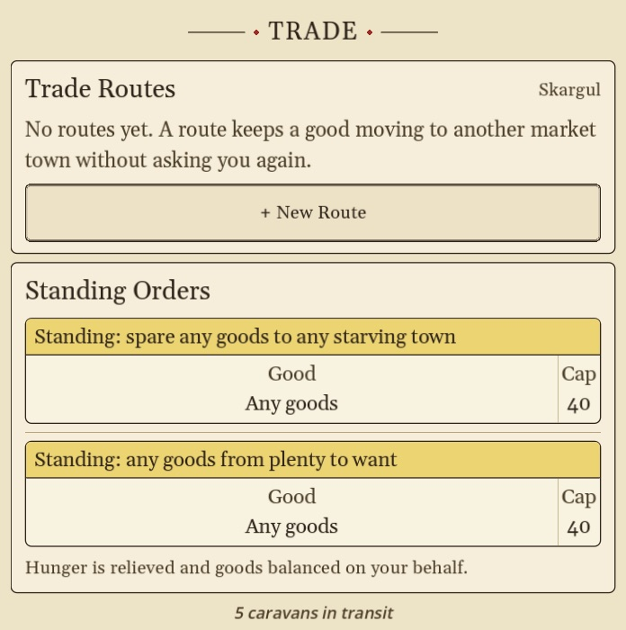
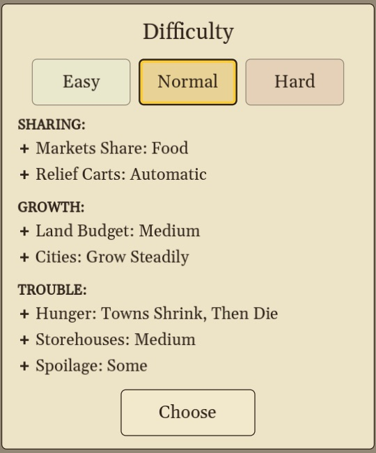
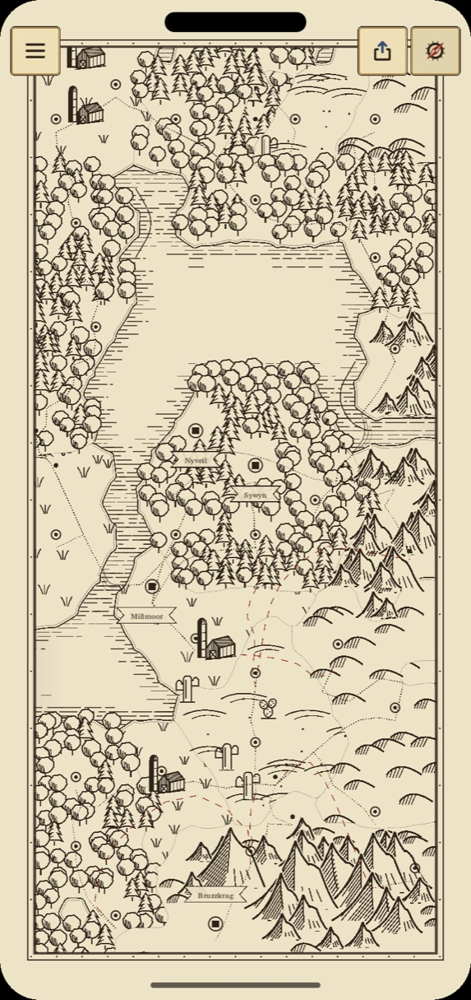

Last updated: October 5, 2026
You draw the world. The peoples of the world settle it. Paint terrain onto the parchment, and Elves, Dwarves, Humans, Halflings and Orcs found hamlets on the land they love, then grow them into villages, towns and cities. Your job is to give them the land, the food and the trade they need to keep growing. The goal: build a map worthy of sharing with your friends.

- Painting the Map
- Land, Prosperity and Levels
- Who Settles Where
- How Settlements Grow
- Reading the Faces
- From Town to City
- Markets and Their Rings
- Food
- Goods and Trade
- Roads
- Capitals
- Easy, Normal and Hard
- Pausing and the Atlas View
Painting the Map
When you draw a new map you can start on Blank Parchment or on a Starter Coast, a large coast of about 100 tiles, cut from a hand-painted map, with Woods, Peaks, Plains, Hills and Desert each in its own region and towns already founding. Paint beside it to grow it.
- Pick a terrain from the terrain bar at the bottom of the screen.
- Tap to place land.
- Hold, then drag to paint land.
- Double-tap land to erase it. You get its Land back, except for the land of a Starter Coast, which were free to begin with.
- Erasing: erase land three times in a row, each within 2.5 seconds of the last, and Erasing turns on. Every tap then erases, which is handy for clearing an area. Pick any terrain in the terrain bar to stop.
- Double-tap inside a ring of land to fill it with the terrain you have selected. The map's edge counts as part of the ring.
- Use the speed button to fast-forward time. At normal speed, one day in the world takes about a minute.
When every open cell is painted, the map can grow. Tap the glowing edge to open new land on that side.


Land, Prosperity and Levels
- Painting spends Land. The Land pill shows what you have left to spend. It is a budget, not a score.
- Land slowly refills over time, up to a cap.
- The land you paint raises your Prosperity. Mixing different terrains raises it faster.
- Prosperity earns Levels, and each Level raises your Land cap.
- Water costs half as much Land as other terrain on Easy and Normal.
Tap Prosperity at any time to see your progress and tips.
Who Settles Where
Each people settles one kind of land, and each land makes one good:
| Terrain | Settled by | Makes |
|---|---|---|
| Plains | Humans | Grain (Food) |
| Woods | Elves | Timber |
| Hills | Halflings | Stone |
| Mountains | Dwarves | Ore |
| Desert | Orcs | Spice |
| Water | No one | Fish (food), via coastal towns |
Only Grain and Fish feed people. A storehouse full of ore will not stop a town from going hungry.
How Settlements Grow
Every settlement climbs Hamlet → Village → Town → City. To reach each stage it has to be old enough and big enough:
| Stage | Size | Also needs |
|---|---|---|
| Village | 2 land | A couple of days of age |
| Town | 4 land | Age, and a small basket of its own goods |
| City | 6 land | Age, a Market, enough food, and a basket of Timber and Stone or Ore |
Towns claim new land by themselves, but only onto painted land of their own terrain right beside them. If a town has nowhere to grow, you have to paint that land for it.
Reading the Faces
The coin above each settlement tells you how it is doing. The clock hand sweeping around the coin shows where it is heading: clockwise means it is getting better, backward means time is running out. A coin with no hand is holding still.

| Face | Means | What to do |
|---|---|---|
| Green grin | Needs nothing. Every gate is met. | Enjoy it. |
| Yellow smile | Growing on its own toward the next stage. | Wait, or speed up time. If the town panel says Boxed In, it has no open cell to grow into, so grow the map. |
| Orange frown | Stuck, and waiting on you. | Tap the town. Its status tells you what it needs (see below). Blockers you can fix, such as a missing Market or food and goods still on the way, show in their own color. |
| Red | Out of food. | Tap the town and use Add Food (or Bring Food when its food has to come from elsewhere). A hand turning clockwise means food is on the way. A hand turning backward is counting down to black. |
| Black | Starving for too long, and shrinking. | Feed it as soon as you can. A town that loses all its land is gone; a fallen City leaves a named ruin that stands for a season. |
The 1 Needs You plate at the top of the screen (3 Need You when there are more) jumps to the next settlement that needs your help.
The town panel folds out of the way while you drag or pinch the map. Folded, it shows only the town's name: tap the name, or tap the same town, to open it again. There is no Close button. Tapping the map closes the panel.
From Town to City
A town that no trade network reaches cannot get caravans or become a City. Most orange frowns are Towns stuck one step short of City. Tap the town, and its status names the first thing it is missing:
| Status | Fix |
|---|---|
| Wants a Market | Build a Market in this town, or in a Town nearby whose ring would reach it. Once a network reaches the town, its panel offers Trade instead. See Markets. |
| Waiting on Food | A City eats more than a Town. Its ring needs spare harvest before it can step up. If a trade network reaches the town, Set Up Trade opens the Trade screen with that town selected. See Food. |
| Waiting on Goods | The town has to collect Timber plus Stone or Ore in its own storehouse (8 of each on Easy and Normal, 5 on Hard). See Goods. |
| Needs Land to Grow | Tap Add Land and paint the lit cells in the town's own terrain. |

Once every gate is met, the town spends its goods, becomes a City and turns green.
Markets and Their Rings
- Only a Town can build a Market. Tap it and press Build Market. It costs Land, shown under the button as -1 Land (-2 on Hard).
- Before you build, a faint ghost ring shows exactly who the Market will reach.
- A Market reaches every settlement whose building sits inside its wide outer ring. Settlements in the ring share food, and on Easy they share goods too.
- Two Markets join into one bigger network when each one's ring reaches the other's Market town.
- Rings can overlap without joining. A town that two networks reach is fed by the one whose Market is nearer.
- A town that a network already reaches shows In the (Name) Trade Network on its panel. Its main button is Trade, not Build Market (Market if it owns the Market). It can still have a Market of its own: the Trade screen has a Build a Market Here button at the bottom.
- A town that is Waiting on Food or Waiting on Goods and that a network reaches gets a Set Up Trade button, which opens the Trade screen with that town selected. The "needs you" toast carries the same button. Add Food and Bring Food still come first when they fix it.
A town's Market screen lists What a Market Does:
- Its ring joins nearby towns into one trade network.
- Towns in a network can become Cities.
- A bigger storehouse.
- On the coast, a port for sea lanes.
- Shipments to other networks draw on its whole ring.
- Its ring can join two networks into one.


Tip: place Markets so their rings take in towns of different terrains. A ring of Humans, Elves and Dwarves has food, timber and ore close at hand.
Food
- Hamlets and Villages feed themselves. From Town up, settlements eat, and every stage eats more than the last.
- On Easy and Normal, a ring shares one food supply. As long as the ring grows enough, everyone in it is fed. A Market moves food around its ring but grows none: only Plains towns and towns with a dock do.
- When a town runs short, tap it and press Add Food. Glowing spots show where Plains or Water would feed it, and a split spot takes either. If the selected terrain would not feed a glowing spot, the card says why, for example Water Won't Feed Dragul Here or Dragul Already Has a Coast.
- If there is no room left to farm, the button reads Add Land instead: fill the map and grow it, then feed the town in the new land.
- When the map cannot grow there either, the town reads Shrinking to Fit and its panel says how short its network is. Repaint a tile inside the ring as Plains or Water to feed it.
- The town panel and the "needs you" toast say what to do for a hungry town: paint food, repaint a tile, grow the map, or build a Market.
Goods and Trade
A town pays for becoming a City with goods that were delivered to it: Timber, plus either Stone or Ore. Goods travel by cart along the roads you see on the map and by boat between coastal Market towns. Roads appear on their own between settlements a short way apart.
On Easy and Normal
The realm balances goods for you. If a town is short of something it needs, carts bring it from any connected settlement that has some to spare. If a town sits on Waiting on Goods for a long time, it is usually one of two things. Either nothing connected to it makes that good, or the towns that do make it have none to spare:
- No Timber? Paint Woods near your towns so the Elves settle there.
- No Stone or Ore? Paint Hills (Halflings, Stone) or Mountains (Dwarves, Ore).
- Makers with nothing to spare? A town only ships what it holds beyond its own reserve and its own next promotion. Paint more of that land so new and bigger towns grow up with spare.
- Give the new settlements time to grow. Villages and towns trade their spare, and hamlets trade nothing yet.
- If a network reaches the stuck town, tap it and press Set Up Trade to open the Trade screen with that town selected.
- If the only town that makes it is in another ring, or in no ring at all, build a Market there. Goods cross between rings only from one Market town to another.
Setting Up a Route
A route keeps one good moving from one Market town to another, without asking you again. Routes work on every difficulty. On Hard they are how anything moves at all.
- Tap the Market town that has the good, and open Trade.
- Tap + New Route.
- Tap the marked Market town that needs it. That is the Market in the stuck town's ring.
- Choose the good and how urgently to send it, then confirm.
Goods arriving from another ring fill that ring's shortages first, starting with the town that needs them most, so the stuck town is served even if the route ends at its ring's Market. Longer hauls take more days, so a Market placed closer is worth something. On Easy and Normal every cart arrives with its whole load. On Hard carts drop some cargo on the way, a little on every stretch of road and more on unfinished road. If the Trade screen says No other market town is in reach, build a Market further out, or connect two coastal Market towns by sea.

Roads
- Roads form on their own between settlements a short way apart, and can cross water.
- Goods only travel along roads you can see, and by boat between coastal Market towns.
- A new road is built a section at a time and shows as red dashes until it is complete. Trade over an unfinished road is slower (on Normal and Hard), and the Trade screen says how many days are left.
- Build Road Now finishes a road under construction at once, after you confirm. It costs 1 Timber for each stretch still to build (at least 1), paid from the storehouse of a town at either end; the button shows the cost beside the timber icon. Find it on the Trade screen's route row, in a town's panel, or by tapping the red dashes.
- Tap a town to see what its storehouse holds: every good with how many it has.
Capitals
Each people can crown one City as its Capital (★, a moat ring and banner). A Capital is bought, not given: the City must be doing well and must have collected a range of different goods in its own storehouse (3 kinds on Easy, 4 on Normal, 5 on Hard).
Easy, Normal and Hard
| Easy | Normal | Hard | |
|---|---|---|---|
| In short | Everything runs itself | Food is shared, goods travel | Nothing arrives unless you send it |
| Food in a ring | Shared | Shared | Not shared: you route it |
| Goods in a ring | Shared | Carried for you by cart | Only what you route |
| Cargo on the way | Always arrives whole | Always arrives whole | Some is lost, more on unfinished road |
| Unfinished roads | Full speed | Slower until complete | Slower, and carry food only |
| Hunger | A town stops growing but never shrinks | A town shrinks if it goes hungry too long | Same as Normal |
| Town to City | Fastest | Medium | Slowest |

You can switch difficulty any time from the pause menu.
Pausing and the Atlas View
- Pause stops time. Nothing on the map moves: townsfolk, boats and carts hold where they stand. You can still pan and zoom to look around, but taps change nothing until you play again.
- The compass button beside the zoom button redraws your world as an inked fantasy map, the Atlas. Mountains gather into ranges with tall peaks along their ridges and valleys between them, woods become round trees and stands of pines, plains grow grass tufts, farmsteads and plows, deserts get dunes and cacti, and every coast is hatched in ink. A stray patch of one to three tiles inside other land is drawn as the land around it.
- The Atlas is lightly colored: pale blue water, soft green woods, ochre deserts, gray-brown mountains, olive hills and straw plains. Bare parchment inside the frame is drawn as sea there (only in the Atlas: roads and ports still treat it as parchment).
- The Atlas names your lands. Big ranges, woods, deserts, lakes and bays (40 tiles or more) and the sea get names, and every City rules a province, which can show its dashed border. Provinces grow as you play: when a Town becomes a City it founds one, and settlements within 12 tiles join it. Cities stand as a stone tower and capital Cities as a castle, set among their trees and peaks.
- Tap the Names and Colors button beside Share (Aa on a phone, a gear on an iPad) to turn Land Names, Province Names, Colored Borders (soft colored bands where different kinds of land meet), Colored Fill (the land and water washes) or Province Lines (each province's dashed border, off to start) on or off for this map. The map stays bright while the switches are open, so you see each change as you make it. Hold a name to rename it; clear the name to bring back the one the map gave it.
- The Atlas is for looking: time stops, taps only pan, and only the menu, Names, Share and the compass stay on screen. Switching keeps your zoom. Tap the compass again to return to the colored map.
- Share saves a picture of your world: choose World Map or Atlas Map, then Picture (saves to Photos) or PDF (a big, sharp file of about 12,000 pixels that messaging apps send whole). The same Share Map button sits at the bottom of the pause menu.

Still Stuck?
Write to dev@articlegames.com and tell us what the town's status says. We read everything.